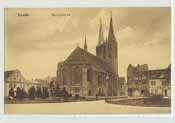

|
|
|
Roland  Marienkirche
Uenlinger Tor
Tangermünder Tor
Dom
Panoramaansicht
|
1022 Besitzung des Michaelisklosters im Bistum Hildesheim erstmals als Dorf Steinedal genannt um 1160 Markgraf Albrecht der Bär von Brandenburg richtet im Dorfe Steinedal einen öffentlichen Markt ein - die Stadt erhält Marktrecht 1283 Älteste urkundliche Erwähnung der Kaufmannskirche St. Marien um 1300 Stendal erhält Stadtmauern, Errichtung des Tangermünder Tores (erhalten noch der feldsteinerne Unterbau) 1423 Beginn des Dombaus 1440 Bau des Unglinger Tores. 15. Jhd. Errichtung des Rathauses in verschiedenen Zeitetappen mit Gewandhaus, Corps- und Seitenflügel 1468 St. Katharinen geweiht 1488 Auflehnung der Stendaler Bürger gegen die Biersteuer 1518 Austritt aus der Hanse gemeinsam mit Berlin, Brandenburg, Frankfurt und Salzwedel 1525 Aufstellung des Roland 1535 Offizielle Einführung der lutherischen Lehre in der Altmark 1640 Stendal wird Garnisonsstadt (bis Ende 1994) 1682 1205 (darunter 537 Kinder) sterben an der Pest 1771 – 1830 Abbruch der Stadtbefestigungen, gleichzeitig Abbruch Wendenturm, Torturm, Arneburger Tor und Viehtor 1849 Bahnstrecke Magdeburg – Stendal – Wittenberge eröffnet 1869 Baubeginn Hauptbahnhof (Fertigstellung 1871) 1926 Stendaler Pferdebahn stellt nach 34 Jahren ihren Betrieb ein 1944/45 Bombenangriff auf Stendal, Besetzung durch alliierte Truppen, später durch sowjetische Truppen 1950 Stendal wird Kreisstadt
|